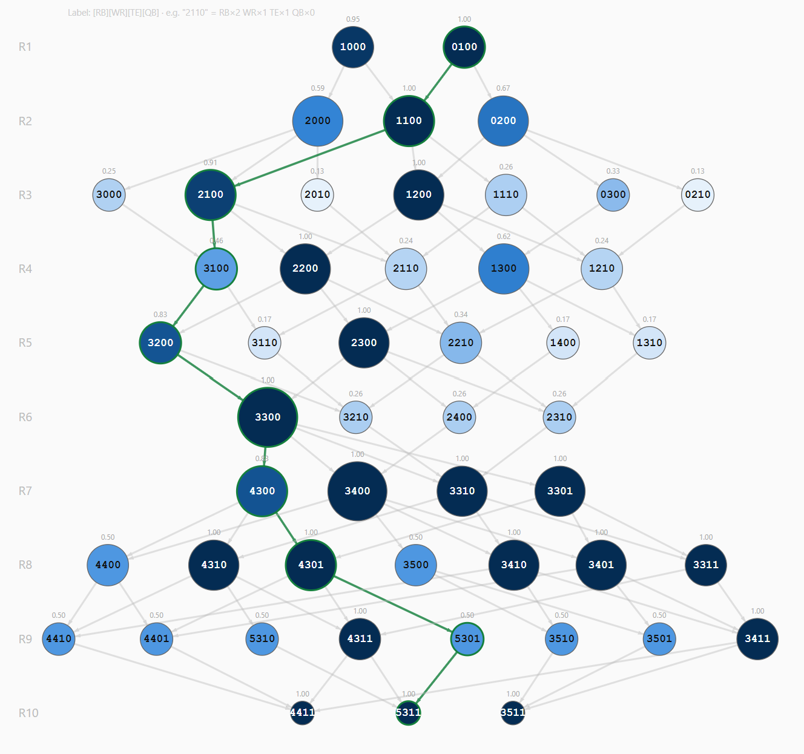

Fun Stuff
Side projects I build to think through ideas that don't fit anywhere else.

Draft Strategy Tool
This tool models a fantasy football draft as a directed acyclic graph. Each node is a roster state — how many running backs, receivers, tight ends, and quarterbacks you've drafted so far — and each edge is a single pick that carries you into the next round. Draft rules and positional scarcity prune the full combinatorial space down to a realistic subset, and the resulting network is analyzed for structure: which early picks are high-leverage, which roster states preserve the most downstream flexibility, and which final builds are only reachable through bottleneck states. The goal is to turn draft intuition into something you can see and measure.